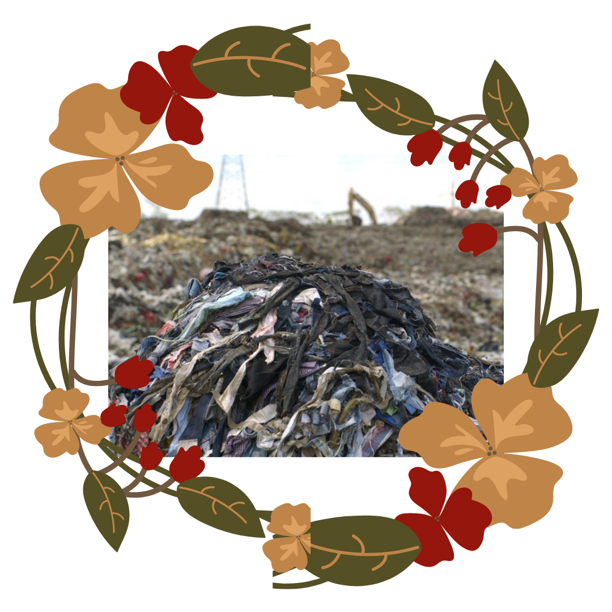

SHEIN
Lanza entre 700 a 1000 estilos al día, contribuyendo a la masa de desechos textiles en los vertederos. Es responsable del 10% de emisiones anuales de carbono. Así como sus paquetes demoran en llegar mínimo entre dos semanas y un mes, copiándose de las prendas de específicos diseñadores como la mexicana Illse Valfré. Por otro lado, las condiciones higiénicas y de salubridad en sus sedes son completamente bajas, orillando a sus trabajadores a altas horas de horario laboral y exponiéndolos a enfermedades así como el poco sueldo que se les ofrece.
HENNES&MAURITZ
Es el segundo grupo de moda más grande del mundo, pero incluso su propio responsable global menciona que “el fast fashion no es sostenible". Con la crisis económica de 2020 a causa del COVID-19 las acciones de H&M cayeron más del 4% y una pérdida total anual del 27%. Sin embargo, se incluyen en el 10% de emisiones anuales de carbono, y son una de las principales empresas en perjudicar el área ambiental por sus sedes. La ropa se renueva cada semana, por lo que las prendas que no se compraron, son llevadas a los basureros y puntos de deshechos en mares o lagos funcionales a esto.
PULL&BEAR
La calidad de su material es muy baja. Es una de las empresas que más produce ropa, pero que la demanda no es la misma, por lo que se tiene que recurrir a deshechar todo a los basureros, tanto vestimenta como calzado. Al ser tanta ropa es muy difícil reutilizarla o darle otro ciclo de uso, por lo que simplemente se va a los vertederos en donde pasa a ser una causa más de la contaminación. En el caso del calzado, se utilizan materiales sintéticos con muy poca durabilidad, pero con costos bajos y con diseños que fácilmente caducan.

Se puede reemplazar de poco en poco las compras innecesarias en estos lugares, que solo contaminan y perjudican al planeta.
Se tienen tres principales acciones que se pueden emplear
para la sustitución de la compra en el fast fashion.
SEGUNDA MANO
Consiste en darle una nueva vida a las prendas, vendiéndolas a otras personas. Es ropa que ya tuvo un uso pero no deja de ser funcional.
TRUEQUES
Es el intercambio de ropa, calzado, joyería u cualquier otro objeto en posesión por uno nuevo con una o más personas.
BAZARES
Pequeños negocios donde se puede encontrar todo tipo de cosas por un precio accesible y con una calidad alta. Se encuentran en tianguis, locales y en línea.